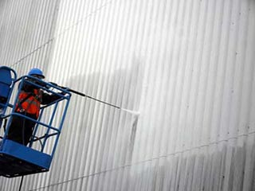
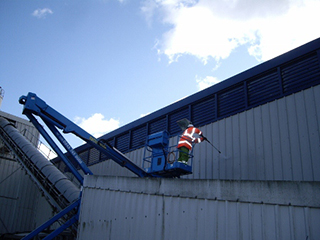

Мойка фасадов зданий с применением передвижной автотехники, снабженной подъемником и корзиной, с которой работают специалисты, актуальна при высотной мойке зданий сложной архитектуры. Когда производство работ методом промышленного альпинизма невозможно за счёт большого угла наклонных элементов фасада или отсутствия доступа и креплений на кровле.
Здания, торговые комплексы и бизнес-центры с высотой фасада до 20 метров, которые не удается помыть системой для высотной мойки, так же обслуживаются с автовышки. Преимущество мойки фасадов таким способом заключается в том, что работы выполняются быстро и качественно. За счёт ручной обработки поверхности и доступа к трудно доступным местам. Машина подается по заранее согласованному графику. Предварительно необходимо освободить территорию, площадку,парковку от машин. Минусами в использовании автовышек являются предварительные работы по подготовке территории для проезда. Сложность маневрирования подъемником в густо застроенных улицах и дворах.
Компания Prestige Facade - cleaning имеет в своем распоряжений несколько единиц подобной техники для реализации поставленных задач по клинингу Фасадов в Санкт-Петербурге.
